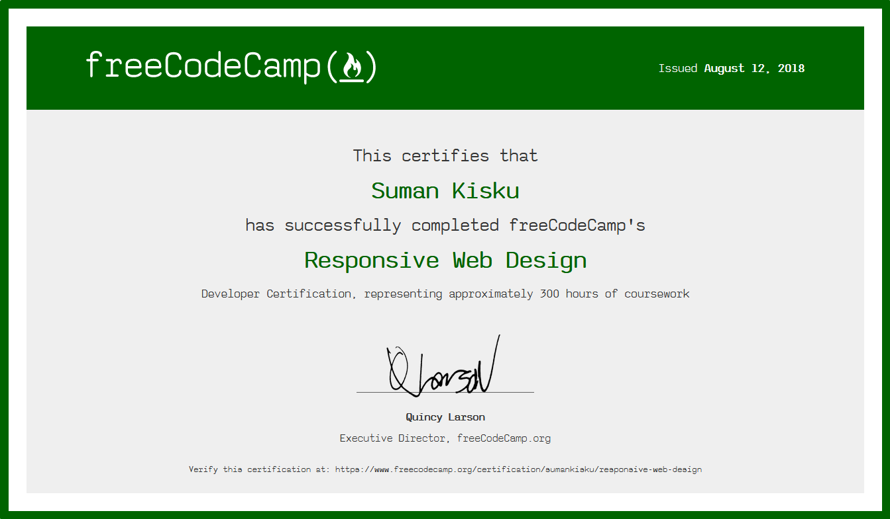

Suman Kisku
Front End Developer
Clone of Atomist.com
I did this project during Chingu voyage. I worked with an another person in this project. While doing the I learned more about git and project management and how to collabe with others.
Clone of the site | Github Repo